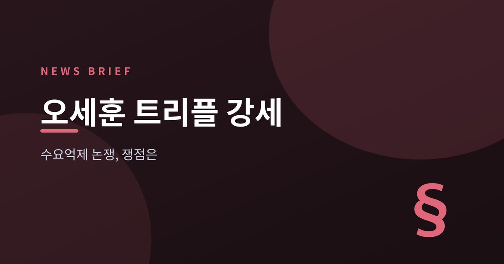
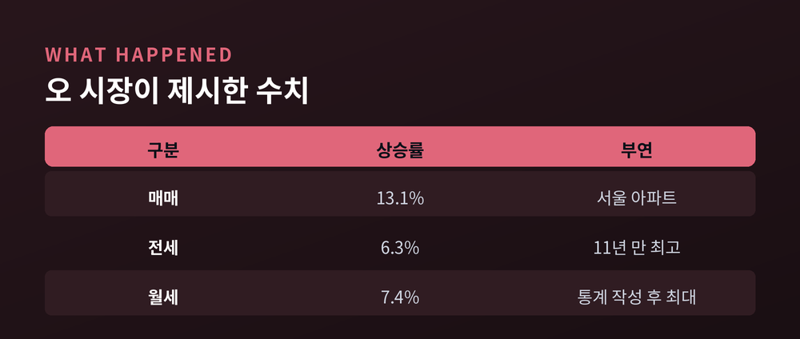
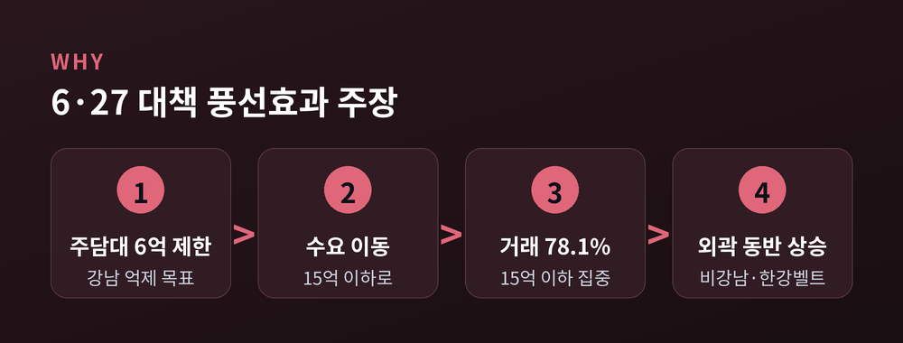
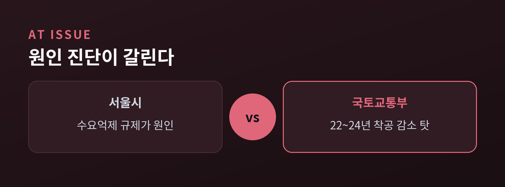
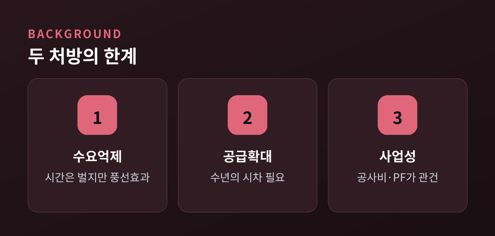

이번 글에서는 2026년 7월 15일 공개된 오세훈 서울시장의 '일타시장' 영상과 그 파장을 정리해 보겠습니다. 오 시장이 던진 '트리플 강세'라는 진단, 그리고 정부가 내놓은 반론을 나란히 놓고 살펴봅니다. 어느 편이 옳은지 판정하기보다, 판단에 필요한 재료를 정리하는 데 목적을 두었습니다.
서울시가 7월 15일 공식 웹사이트와 소셜방송 '라이브서울'에 영상 한 편을 올렸습니다.
제목은 '일타시장 오세훈 — 국무회의에서 미처 다 하지 못한 이야기: 이재명 정부 부동산 지옥, 원인 분석 보고서'입니다. 분량은 약 26분. 오 시장이 '일타강사'를 자처하며 데이터를 놓고 강의하듯 설명하는 형식입니다.
발단은 하루 전인 7월 14일 국무회의였습니다.
이재명 대통령이 주재한 회의에서 오 시장은 토론 말미에 발언 기회를 요청했습니다. 한성숙 국무총리는 국민 대토론회가 예정돼 있다며 서류로 받겠다고 답했습니다. 오 시장은 준비한 30쪽 분량 보고서를 김용범 정책실장, 구윤철 부총리 겸 재정경제부 장관, 김윤덕 국토교통부 장관에게 전달했습니다.
"오늘 발언 기회를 안 주실 것 같으니 그 보고서 내용으로 대체하겠다."
한 총리는 "잘 참고하겠다"고 답했습니다. 오 시장은 이후 말할 기회를 갖지 못해 섭섭하다며, 국무회의는 갑론을박이 있어야 한다고 언급했습니다. 하루 뒤 26분짜리 영상이 나온 배경입니다.
영상의 뼈대는 세 개의 숫자입니다. 이재명 정부 출범 이후 1년간 서울 아파트 기준입니다.
| 구분 | 상승률 | 오 시장 부연 |
|---|---|---|
| 매매 가격 | 13.1% | — |
| 전세 보증금 | 6.3% | 11년 만의 최고 상승률 |
| 월세 | 7.4% | 통계 작성 이후 최대 오름폭 |
매매·전세·월세가 동시에 올랐다는 뜻에서 오 시장은 이를 '트리플 강세'라 불렀습니다. 이재명 정부는 2025년 6월 4일 출범했으니, '지난 1년'은 대략 2025년 6월부터 2026년 6월까지의 구간입니다.

다만 짚어둘 점이 있습니다. 오 시장 측이 인용한 원자료가 한국부동산원인지 KB 통계인지는 보도에 명시되지 않았습니다. 그러니 이 수치들은 '오 시장이 제시한 숫자'로 읽는 편이 정확합니다.
그렇다면 방향 자체는 어떨까요.
한국부동산원이 7월 15일 발표한 '2026년 6월 전국주택가격동향조사'를 보면, 6월 한 달 동안 서울 아파트 매매가격은 1.21%, 전세가격은 1.37%, 월세는 1.15% 올랐습니다. 전세 상승률이 매매를 앞질렀습니다. 강북권에서는 성북구가 1.39%, 광진구가 1.31% 올랐습니다.
정부 공식 통계기관의 자료로도 매매·전세·월세 동반 상승은 확인되는 셈입니다. 현상 진단만 놓고 보면 오 시장의 지적은 사실관계에 부합합니다.
문제는 그다음입니다. 왜 올랐는가.
오 시장은 정부가 1년 동안 여섯 차례 내놓은 부동산 대책을 겨냥했습니다. 주택담보대출 제한, 규제지역 확대, 다주택자 양도소득세 중과. 공급을 늘리기보다 수요를 억누르는 데 치중했다는 지적입니다.
가장 공들여 비판한 대상은 6·27 대책입니다.
수도권과 규제지역의 주택담보대출 한도를 6억 원으로 묶은 조치였습니다. 강남 집값을 잡겠다는 목표였습니다. 오 시장은 결과가 반대로 나왔다고 봅니다. 매수 수요가 사라진 게 아니라 15억 원 이하 아파트로 옮겨갔다는 것입니다. 대책 이후 서울 거래의 78.1%가 15억 원 이하에 몰렸습니다.
"강남 집값을 잡겠다고 내놓은 대책이 비강남과 한강벨트, 서울 외곽지역 가격까지 끌어올렸다."

세금도 도마에 올렸습니다. 오 시장은 서울의 1주택자 종합부동산세 대상자가 지난해 12만 명에서 올해 16만 명으로 늘어날 것으로 전망했습니다. 투기를 잡겠다던 세금이 중산층 1주택자에게 청구서로 돌아갔다는 주장입니다. 그 청구서는 투기꾼이 아니라 청년과 신혼부부, 중산층 1주택자에게 돌아갔다는 것이 그의 표현입니다.
대안으로는 민간 정비사업 활성화를 꼽았습니다. 도심 안에 양질의 주택 물량 자체를 늘려야 전·월세 시장도 안정된다는 논리입니다. 정부가 공공 주도 임대주택 공급에 치중한 점도 전·월세 급등의 원인으로 지목했습니다.
정치적 해석에는 선을 그었습니다. 이번 지적은 정부와 각을 세우기 위한 정치적 공세가 아니라는 것입니다. 근거로는 서울시가 지난 1년간 정부에 일곱 차례에 걸쳐 총 18건의 제도 개선안을 건의해 왔다는 점을 들었습니다. 현장 최일선의 데이터를 정부와 공유해 해법을 찾자는 취지라는 설명입니다.
여기서 반대편 이야기를 들어야 균형이 맞습니다.
국토교통부는 이미 6월 11일 보도설명자료를 통해 오 시장의 전월세 정책 비판에 공식 반박한 바 있습니다. 그 논리 구조는 7월 사안에도 그대로 적용됩니다.
첫째, 원인 진단이 다릅니다.
국토부는 전월세 가격 상승의 주요 원인으로 2022~2024년의 착공 감소를 지목했습니다. 배경으로는 부동산 프로젝트파이낸싱(PF) 위기와 러시아·우크라이나 전쟁에 따른 건설공사비 급등을 들었습니다. 착공에서 입주까지는 통상 수년이 걸립니다. 지금의 물량 부족은 현 정부 이전에 이미 끊긴 파이프라인의 결과라는 주장입니다.
둘째, 책임 소재를 되짚었습니다.
"재개발·재건축을 포함한 주택 공급 인허가권을 사실상 보유한 서울시가 전후 맥락에 대한 고려 없이 현재 전월세 가격 상승 원인을 중앙정부 책임으로만 돌리는 것은 유감이다."
공급을 늘릴 열쇠, 즉 인허가권을 쥔 쪽이 서울시라는 역공입니다.
셋째, 전세의 월세화를 보는 눈이 다릅니다. 국토부는 이를 임대차 시장의 구조적 변화로 규정했습니다. 정책 실패의 산물이 아니라 시장의 구조 전환이라는 시각입니다.
국토부는 자신들의 노력도 제시했습니다. 3월부터 장관 주재 타운홀 미팅 등 10여 차례 업계 간담회를 열었고, '범정부 주택공급 현장 애로해소 지원센터'를 가동했다는 것입니다. 그러면서 서울시 등 지방정부의 적극적인 협조도 필요한 상황이라고 덧붙였습니다.

정부가 왜 수요억제를 택했는지도 짚어야 공정합니다.
정부 대책은 공급을 앞세우되 금융·대출 규제로 수요를 제한하는 혼합형이었다는 평가를 받습니다. 실제로 6·27 대책이 대출 규제였다면, 9·7 대책은 향후 5년간 수도권 135만호 공급 계획을 담았습니다. 10·15 대책은 서울 전역과 경기 12개 지역을 조정대상지역·투기과열지구·토지거래허가구역으로 묶는 '3중 규제'였습니다.
공급은 효과가 나타나기까지 시차가 큽니다. 그 사이 가격 급등과 가계부채 팽창을 막을 단기 수단이 필요했다는 것이 정부 측 논리입니다. 이재명 정부 1년을 결산한 보도 중에는 집값 상승폭은 조절했지만 전세는 급등했다는 평가도 있었습니다. 매매 부문에서는 일정한 억제 효과가 있었다고 보는 시각입니다.
한 가지 덧붙이자면, 대책이 여섯 차례였는지는 집계 기준에 따라 달라집니다. 굵직한 대책만 세면 네 차례로 보는 보도도 있습니다. 여섯 차례는 오 시장 측의 집계입니다.
이 논쟁은 이번에 처음 나온 것이 아닙니다.
학계에도 근거가 쌓여 있습니다. 권호근의 2021년 연구는 부동산 가격 억제 정책을 공급 확대와 수요 억제로 나눠 분석한 뒤, 전자는 효과적이었으나 후자는 그렇지 못했다는 결론을 냈습니다. 수요억제가 가격을 안정시키기는커녕 오히려 자극했다는 주장입니다.
선례도 있습니다. 문재인 정부는 임기 중 26차례에 이르는 고강도 수요 억제책을 폈습니다. 결과는 알려진 대로입니다. 정권이 바뀌면 다시 돈줄이 풀리리라는 기대가 시장에 남아 있어 대책이 힘을 잃었다는 분석이 뒤따랐습니다.
그렇다고 수요억제가 무용지물이라는 결론으로 곧장 가기는 어렵습니다. 김성환 한국건설산업연구원 연구위원의 정리가 균형을 잡아줍니다.
"수요억제는 시간을 벌어주는 정책이지 공급·전월세 문제를 대체하는 정책은 아니다."
수요억제 자체를 부정하기보다 역할의 한계를 규정하는 시각입니다. 시간을 벌 수는 있으나, 그 시간에 공급을 만들어내지 못하면 의미가 없다는 뜻으로 읽힙니다.
공급확대론에도 아쉬운 대목은 있습니다.
공급은 인허가에서 착공, 준공까지 수년이 걸립니다. 오늘 규제를 풀어도 내일 집이 서지는 않습니다. 게다가 규제를 완화해도 공사비 급등과 PF 경색으로 사업성이 나오지 않으면 민간 공급은 늘지 않습니다. 주택공급 확대는 결국 사업성 회복에 달렸다는 지적이 나오는 이유입니다.
제3의 시각도 있습니다. 수요억제냐 공급확대냐 이전에, 정책이 정권마다 뒤집히는 것 자체가 문제라는 것입니다. 손쉽게 뒤집히는 주택정책은 수요자의 불신을 키우고, 그 결과 대책은 무력화된 채 집값의 진폭만 커진다는 분석입니다.

오 시장은 후속 영상을 예고했습니다. 향후 정책 방향 전환과 서울시 차원의 대책을 담겠다고 했습니다.
주목할 지점은 세 가지입니다.
첫째, 양측 모두 공급을 늘려야 한다는 데는 이미 동의하고 있습니다. 오 시장은 민간 정비사업 활성화를 말했고, 국토부는 공급 확대에 속도를 내야 한다며 지방정부의 협조를 요청했습니다. 충돌하는 것은 목표가 아니라 병목의 위치입니다. 중앙정부의 규제인가, 서울시의 인허가와 과거의 착공 감소인가.
둘째, 그렇다면 협력의 여지도 남아 있습니다. 인허가권은 서울시에, 금융·세제 권한은 중앙정부에 있습니다. 어느 한쪽만으로는 물량이 나오지 않는 구조입니다. 다만 서울시의회는 6·3 지방선거 이후 더불어민주당이 다수를 차지했습니다. 오 시장은 사상 첫 5선 서울시장입니다. 대립 구도가 쉽게 풀릴 환경은 아닙니다.
셋째, 통계 해석의 이견은 계속될 것입니다. 기준 시점과 비교 구간, 통계기관에 따라 상승률은 달라집니다. 같은 시장을 두고 상승폭은 조절됐다는 평가와 대책 낼 때마다 올랐다는 평가가 공존하는 이유입니다. 숫자를 보실 때 출처와 기준 시점을 함께 확인하시길 권합니다.
한 가지 더 말씀드립니다. 이 글은 시장 상황과 정책 논쟁을 정리한 것이지 투자 권유가 아닙니다. 부동산 시장의 향방은 금리, 공급 일정, 정책 변화 등 여러 변수에 좌우됩니다. 주택 매매나 임대차 결정은 본인의 상황과 판단에 따라 신중히 내리셔야 합니다.
정리하면 이렇습니다.
매매도 전세도 월세도 올랐다는 사실 자체는 한국부동산원 통계로도 확인됩니다. 여기까지는 다툼이 없습니다. 갈리는 것은 원인입니다. 서울시는 규제를 지목하고, 국토부는 과거의 착공 감소와 서울시의 인허가권을 가리킵니다. 학계 역시 한쪽 손을 확실히 들어주지 않습니다. 수요억제는 시간을 벌어줄 뿐이라는 평가와, 공급확대에도 수년의 시차가 있다는 지적이 나란히 놓여 있습니다.
그러니 지금 필요한 것은 승패 판정이 아닐지도 모릅니다 — 같은 목표를 두고 서로를 병목이라 부르는 두 주체가, 각자 쥔 열쇠를 언제 함께 꽂을 것인가.
집을 구하는 사람에게 정치적 유불리는 아무런 위로가 되지 않습니다. 그 사실만큼은 양측 모두 알고 있으리라 생각합니다.